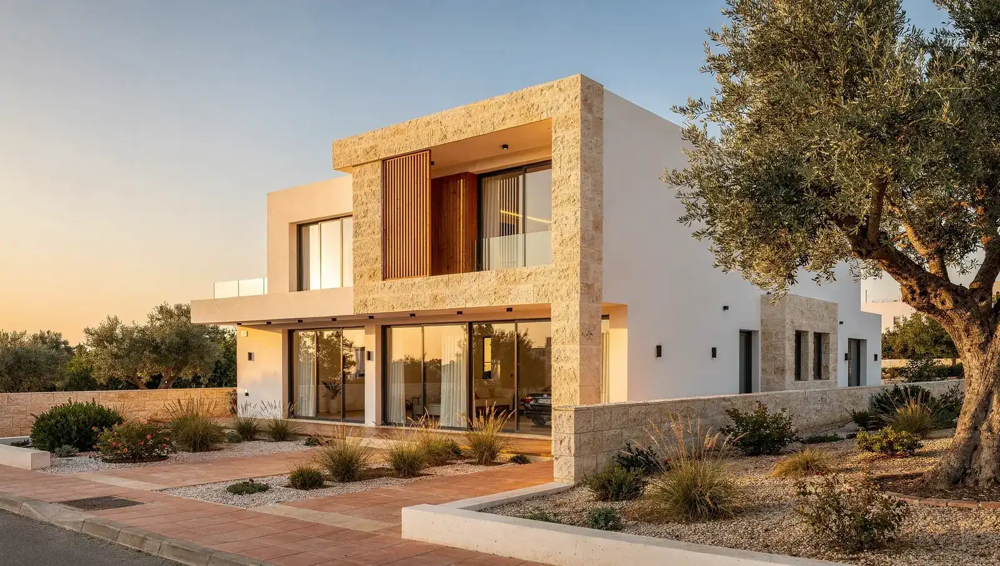
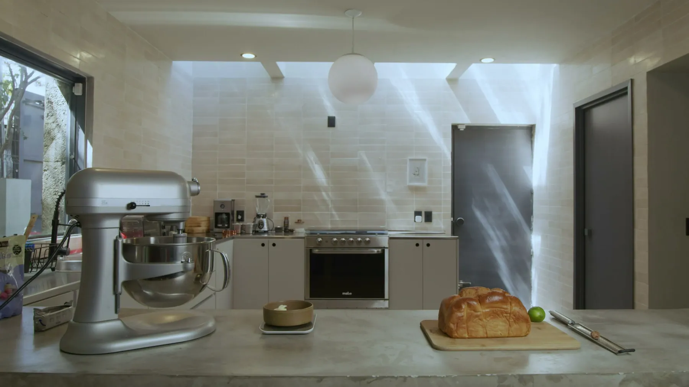
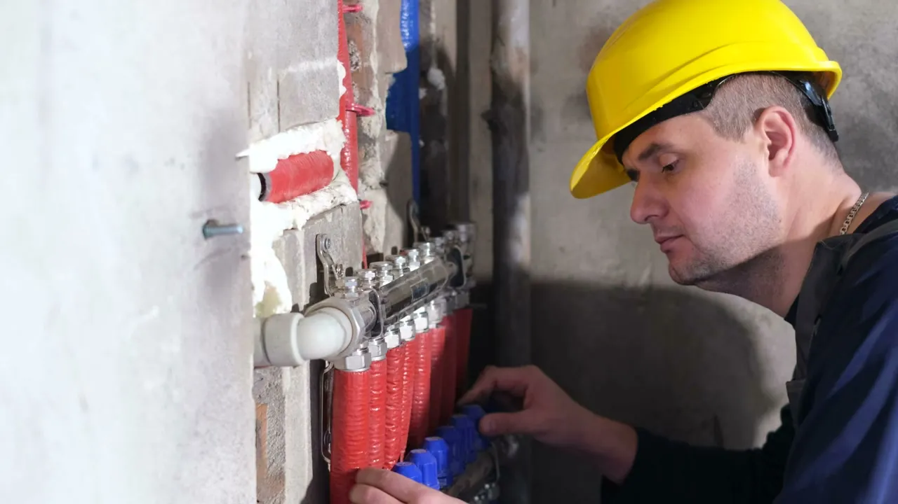

inonda.siteאתם כאן
ניהול הנכס שלי
טיפול בהשכרה, תמיכה בבעלי נכסים, בדיקות וניהול שוטף של נכסים ברחבי קפריסין.
לפרטים על ניהול נכסים
Inonda LTD עוזרת לבעלי נכסים, משקיעים ובעלי דירות בכל קפריסין להגן על הנכס שלהם, להפחית לחץ יומיומי ולהגדיל את הכנסות השכירות — עם מענה תחזוקה מהיר ובדיקות נכס סדירות.
בדיקות כניסה, שוטפות ויציאה עם תיעוד תמונות, כך שתמיד תדעו מה מצב הנכס שלכם.
תקלות מתועדות, מוקצות ומנוטרות כך שבעיות קטנות לא הופכות ליקרות.
תמחור לפי השוק המקומי ויחידות מתוחזקות היטב עוזרים להשכיר מהר יותר ולצמצם תקופות ריקות.
Inonda LTD היא חברת ניהול נכסים מבוססת ניקוסיה, המשרתת בעלי נכסים, משקיעים, בעלי דירות ודיירים בכל קפריסין. אנו מטפלים בעבודה השוטפת של ניהול נכס להשכרה — תקשורת עם דיירים, תחזוקה, בדיקות ודיווח — כך שבעלי הנכסים יוכלו ליהנות מיתרונות ההשקעה ללא הדרישות היומיומיות.
קרא עוד
סקירה כללית של האופן שבו אנו מטפלים בנכס שלכם. פירוט מלא של כל שירות למטה.
תהליך פשוט בשלושה שלבים לניהול מקצועי של הנכס שלכם.
פנו אלינו בטלפון, אימייל או הטופס למטה וספרו לנו על הנכס שלכם.
אנו בוחנים את הנכס שלכם ומספקים הערכה חינם עם ההמלצות והצעת הניהול שלנו.
אנו מטפלים בדיירים ובתחזוקה — ומעדכנים אתכם בדוחות סדירים.
ראו איך הצוות שלנו מבצע תחזוקה, תיקונים ושיפוצים בבתים ברחבי קפריסין.





קבלו הערכת נכס חינם וללא התחייבות מצוות Inonda LTD.
INONDA LTD · שלושה אתרים מחוברים
כל שלושת האתרים שייכים ל־INONDA LTD. מצאו את השירות הדרוש, תכננו תקציב ראשוני ואז התקשרו לתיאום בדיקת הנכס והצעה בכתב.
טיפול בהשכרה, תמיכה בבעלי נכסים, בדיקות וניהול שוטף של נכסים ברחבי קפריסין.
לפרטים על ניהול נכסיםהכירו את שירותי התחזוקה, התיקונים והשיפוצים, את היקף העבודה ואת תהליך העבודה שלנו.
לשירותים ולהיקף העבודהבחרו שירותים, התאימו כמויות והשוו הערכות תקציב שניתן לערוך, כולל מע״מ בשיעור 19%.
בניית ההערכה שליהמחשבון הוא כלי לתכנון ואינו הצעת מחיר קבועה. עבודות מקצועיות מיוחדות, אביזרים ושינויים מבניים מחייבים בדיקה נפרדת. הערכות שנשמרו נשארות בדפדפן שלכם באתר inonda.homes.